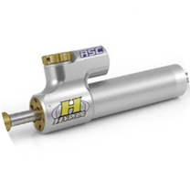
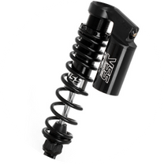
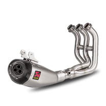
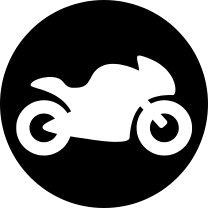

อุปกรณ์เพิ่มสมรรถนะ
ของแต่งมอเตอร์ไซค์มีหลากหลายประเภท ซึ่งช่วยเพิ่มความสวยงาม สมรรถนะ หรือการใช้งานที่ดีขึ้น

กันสะบัด
||หน้าที่: กันสะบัดช่วยลดอาการสั่นของแฮนด์รถมอเตอร์ไซค์
โดยเฉพาะเวลาขับขี่ด้วยความเร็วสูงหรือเมื่อเจอแรงกระแทกจากถนนที่ขรุขระ
||ประโยชน์: ช่วยให้การควบคุมรถมีเสถียรภาพมากขึ้น
ลดความเสี่ยงจากการที่แฮนด์สั่นสะบัดอย่างรุนแรง
ซึ่งอาจทำให้เสียการควบคุมรถ


โช้ค
||หน้าที่: โช้คอัพช่วยดูดซับแรงกระแทกจากพื้นถนน
ทำให้การขับขี่นุ่มนวลและควบคุมรถได้ดีขึ้น
||ประโยชน์:
เพิ่มเสถียรภาพในการขับขี่โดยเฉพาะในโค้งหรือขณะเบรกอย่างรุนแรง
||ปรับแต่งได้: โช้คแต่งมักมีฟังก์ชันในการปรับค่าความแข็ง/อ่อนได้
เช่น การปรับพรีโหลด (Preload), การปรับรีบาวด์ (Rebound),
และการปรับการยุบตัว (Compression)

ท่อไอเสีย
||หน้าที่: ท่อไอเสียแต่งช่วยเพิ่มประสิทธิภาพในการระบายไอเสีย
ทำให้เครื่องยนต์ทำงานได้เต็มประสิทธิภาพมากขึ้น
||ประโยชน์:
เพิ่มสมรรถนะช่วยให้เครื่องยนต์สร้างแรงม้าและแรงบิดได้ดีขึ้น
เนื่องจากมีการระบายไอเสียที่ดีกว่า
||เสียงที่เป็นเอกลักษณ์:
ท่อแต่งสามารถเปลี่ยนโทนเสียงให้มีความลึกหรือดังขึ้น
ช่วยให้ดูเท่และโดดเด่น
||ลดน้ำหนัก: ท่อแต่งบางรุ่นทำจากวัสดุที่เบากว่าท่อเดิม เช่น
ไทเทเนียมหรือคาร์บอนไฟเบอร์

Quick Shifter
||หน้าที่:
ควิกชิฟเตอร์เป็นอุปกรณ์ที่ช่วยให้เปลี่ยนเกียร์ได้โดยไม่ต้องบีบคลัตช์หรือผ่อนคันเร่ง
ช่วยให้การเปลี่ยนเกียร์ทำได้เร็วและราบรื่นขึ้น
||ประโยชน์:
เพิ่มความเร็วในการเปลี่ยนเกียร์เหมาะสำหรับการขับขี่แบบสปอร์ตหรือในการแข่งขัน
||ลดความเมื่อยล้า:
การไม่ต้องบีบคลัตช์หรือผ่อนคันเร่งช่วยลดความเหนื่อยล้าในการขับขี่ระยะไกลหรือขับขี่ที่ต้องเปลี่ยนเกียร์บ่อย

กรองอากาศ
||หน้าที่:
กรองอากาศช่วยกรองฝุ่นละอองและสิ่งสกปรกที่อาจเข้าสู่เครื่องยนต์
ทำให้อากาศที่เข้าสู่เครื่องยนต์สะอาด
||ประโยชน์:
เพิ่มประสิทธิภาพเครื่องยนต์กรองอากาศแต่งมักออกแบบให้มีการไหลของอากาศที่ดีขึ้น
ส่งผลให้เครื่องยนต์มีสมรรถนะสูงขึ้น
||อายุการใช้งานยาวนาน:
กรองอากาศแต่งบางรุ่นสามารถล้างทำความสะอาดและใช้งานซ้ำได้ เช่น
กรองอากาศของ K&N หรือ BMC

อื่นๆ
ของแต่งของมอเตอร์ไซค์นั้นมีหลากหลายอย่างให้เลือกใช้งาน เรียกได้ว่าสามารถแต่งได้ทุกส่วนของตัวรถเลย